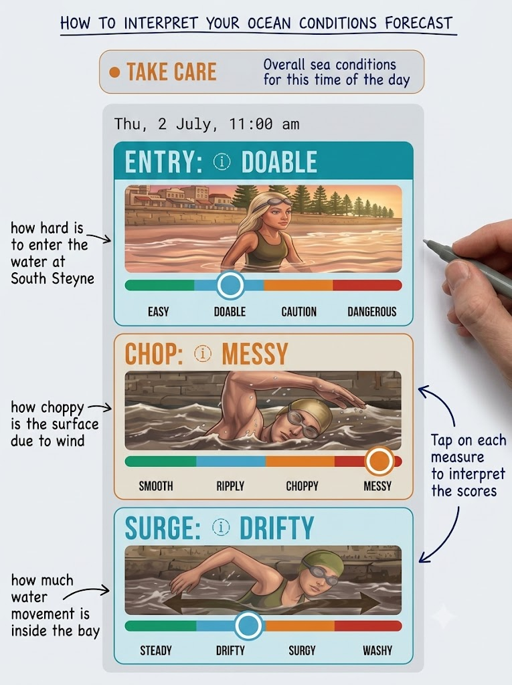

SWIM MANLY
Ocean swim forecast
⚠ Beta release
The model is still in training
Scores may be imprecise at times, but will keep improving over the coming weeks.
© Marco Bordieri — VIZ Group, June 2026
Feedback is precious to improve!
SWIM MANLY — OCEAN SWIM FORECAST
Conditions forecast for swimming South Steyne ↔ Shelly Beach, generated by our proprietary wave-modeling engine.
HOW TO READ IT

OUR GOAL
To help you make informed decisions before you head to the beach. This app is a completely non-profit, community-led initiative born from our shared passion for the Cabbage Tree Bay Aquatic Reserve. Whether you're a local or coming from further afield, we hope this tool makes your swim a little easier, safer, and more enjoyable.
Be patient as we tune the scores in the coming weeks and, as always, use your own judgment before entering the water.
© Marco Bordieri — VIZ Group, June 2026
Creative Commons License: BY NC ND
Contact: vizgroupsydney@gmail.com
Are you a snorkeler or a scuba diver?
1. Join the VIZ Facebook group for fresh underwater visibility reports.
2. Try the twin app VIZ APP for a diveability forecast across Sydney.
👁 App views: —